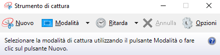
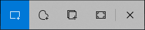

THIS TUTORIAL WAS MADE ON | 03/09/2026 |
1. Click the Windows button and search for "Snipping Tool". Once you find it, click on it and the Snipping Tool window will open:

Once you see it, click on New and take a screenshot. There are also several options available. For example, you can take a freeform snip, capture a specific area, or capture the entire screen. You can also delay the screenshot and use several other features.
This is one of the easiest ways to take a screenshot on Windows.
1. Windows has several keyboard combinations called "shortcuts." With these shortcuts, you can do many different things, including taking screenshots.
2. To take a screenshot using a shortcut, hold ( Windows Key + Shift and press S. ) If you have done everything correctly, you will see the screenshot options appear at the top of your screen:

3. Once you see the screenshot options, you can select and capture any area you want. After taking the screenshot, it will be copied to your clipboard. This means that you can paste it somewhere to view or save it, such as in Paint, a WhatsApp chat, or an image editor.
1. Pressing the Print Screen key can capture the entire screen. Depending on your Windows settings and keyboard configuration, the screenshot may either be copied to the clipboard or saved automatically.
2.If the screenshot was copied to the clipboard, you can paste it by holding Left Ctrl and pressing V. You can paste it into Paint, Word, an image editor, or another application that supports images.
3. You can also press Windows Key + PrtSc / PrtScn / Stamp to automatically save a screenshot. Usually, you can find the screenshot in Pictures → Screenshots
4. You can press Alt + Button + PrtSc / PrtScn / Stamp to capture only the window that is currently active. The screenshot will usually be copied to the clipboard, so you can paste it by holding Left Ctrl and pressing V.
5. You can also use the Xbox Game Bar. Press Windows Key + G to open it. From there, you can use the capture button to take a screenshot.
Hold Command (⌘) + Shift and click 3
This will capture the entire screen. Usually, the screenshot will be automatically saved to your Desktop.
Command (⌘) + Shift and click 4, this will let you screenshot an Area, your cursor will turn into a crosshair. You can then click and drag to select the area you want to capture.
Command (⌘) + Shift and click 5. This will open the Screenshot panel, where you can find several options for capturing your screen, recording your screen, and choosing where to save the captured content.
Command (⌘) + Shift and click 6